- 更新日
- 公開日
（2）いじめの対応を見直し、教育長への手紙を設けよう
主な質疑
目次
これは要約ですので、正確な質疑内容は会議録をご参照ください。読みやすさを考え、初回（初）と、再質問（再）の質疑を合わせています。また、簡略化のため、理事者側（市役所側）の答弁から敬語表現を省いている部分があります。実際は理事者側のすべての答弁が、市民に対する敬語表現でなされています。
今回質問する理由
いじめに関して、市教育委員会による一連の対応を見ていると、すぐに改善しなければならない点が多くあると感じる。
状況に応じて対応を変える必要もあるが、共通する手法も多いため、できる限り対応策をまとめてガイドライン等で共有した方がよい。
たとえば、いじめの調査においては、まず本質的原因を多面的な切り口で分析すること。そのために、たとえば
- 子どもの特性
- 子ども同士の関係性
- 学級や学校のルールや風土・文化などの環境的問題
- 先生の特性
- 学校や教育委員会の組織に関する問題
など、具体的な切り口でそれぞれ要因を深掘りし、それぞれに対して対策を立てること。
また、被害側家族との情報共有について
- 方法
- 頻度
- 注意点
をまとめておくこと。
特に、情報共有の際は口頭ベースだと誤解が生じ易く、網羅的になりにくいなどの問題があるため、必ず文書ベースで行うこと。
また、個人情報の取り扱いも、過剰な対応にならないためにも、例示的なケースをまとめておくこと、などである。
こうした共通の手法や指針がなければ、その都度、現場の判断で対応することになる。するとリスクを避ける心理が働くため、対応の質は低くなり、全体的な改善にもつながっていかない。
いじめの本質的な解決事例を全体として積み重ねていくことは、当事者である子どもや家族の苦しみをなくしたり軽減したりすることに役立つだけではない。校長、教員、そして教育委員会にとっても、これまでずっと続いているであろう困難な状況を軽減することにもつながる。そのためにも、少なくとも上記のような見直しを行っていただきたく、質問する。
映画「夢みる小学校」に、ひとつの理想形が描かれている
余談として、先日、夢みる小学校という映画を観た。これからの学校の在り方として理想的な形がひとつ表されていると感じた。教育委員会や教育関係者には観ていただきたい。
この学校では、児童・生徒を最大限信頼し、子どもたちの自主性や自発性に任せるところが特徴的。
映画が終わってから、白梅学園大学の名誉学長である汐見先生のトークショーがあった。請願第12号の委員会審査資料の中でも、記事を紹介した方。
汐見先生のお話が興味深かった。「不登校」は以前は「登校拒否」としていた。「不登校」というと悪いことをしているような印象。「登校拒否」は、自ら選択して行かない印象。だから「登校拒否児」や「登校拒否」という表現のほうが好ましいと思っている、という趣旨の話。なるほどと思った。
いじめ発生から解決に至るまでの具体的な対応フローはあるか
小平市いじめ防止基本方針には見あたらないが、いじめ発生から解決に至るまでの、関係者との情報のやりとりも含めた、指針となる具体的な対応フローはあるか。
小平市いじめ防止基本方針において、いじめの解消に向けた取組を
- 被害 児童・生徒への対応
- 加害 児童・生徒への対応
- 関係 児童・生徒への対応
- 組織的な対応
の4つに分け、取り組むべき内容を示している。
今回、やり取りの中で、フロー（図）の必要性を強く感じた。
フローがないと、解決に当たる人たちだけではなく、当の子ども本人も、保護者も、どういうふうに解決に至っていくかの全体像がなかなか見えない。その場その場で対応されているのではという不信感につながるところがある。
フローをつくるなら、最初に来るのは「いじめの認知」かと。周りの人たちがいじめを認知するところから始まる。次のステップは、そのいじめが「重大事態か」の判断だろう。
重大事態の扱いが重要
調べたところ、この重大事態に当たるかどうかの判断が重要だと気付いた。多くのいじめは重大事態として扱うべきではないか。
📘 重大事態とは
いじめ防止対策推進法 第5章「重大事態への対処」に記載のある、次のいずれかの事態。
- いじめにより当該学校に在籍する児童等の生命、心身又は財産に重大な被害が生じた疑いがあると認めるとき。
- いじめにより当該学校に在籍する児童等が相当の期間学校を欠席することを余儀なくされている疑いがあると認めるとき。
前者を「自殺等重大事態」、後者を「不登校重大事態」と呼ぶこともあるそうです。
上記の条件が満たされていなくとも、保護者や当事者の子どもから申請があったときには、重大事態が発生したと認める必要があります。
「いじめにより発生した」ことが条件ではあるものの、ひとつのポイントは「疑いがある」という文言。いじめの発生が疑いにすぎなくとも、重大被害が発生したと疑われるときには、この要件が満たされる。
また、特に重要なところは、児童・生徒や保護者から申立てがあったときには、疑いが生じたものと解して、重大事態に該当すると判断を下す必要があるとされているところ。
📘 重大事態の個別要件
重大事態となる個別要件は、いじめ防止対策協議会（平成27年度）（第4回）配付資料の「重大事態」の解説（案）には次のように記載されています。
自殺等重大事態の個別的要件
- 生命被害
生命に（対する）重大な被害、すなわち死および自殺未遂 - 身体被害
身体に（対する）重大な被害、具体的には、おおむね30日以上の加療を要すると見込まれる重大な傷害を目安とする - 財産被害
財産に（対する）重大な被害、具体的には、財産に対する（金銭以外の財産である場合は金銭換算で）おおむね○○万円以上の重大な損害（継続的ないじめの実行行為により財産的損害の累計がこの水準に達した場合を含む）を目安とする - 精神被害
精神に（対する）重大な被害、すなわち精神性疾患を指す。神性疾患の発症や悪化は、医師の診断に基づき判断する必要がある
不登校重大事態の個別的要件
「相当の期間学校を欠席することを余儀なくされている状態」における「相当の期間」の意義については、「児童生徒の問題行動等生徒指導上の諸問題に関する調査」における不登校の定義を踏まえ、年間30日を目安とする。具体的には、いじめにより欠席を余儀なくされた疑いがある日数が年間30日（目安）に達したときに、この要件が満たされる（ただし、児童・生徒が一定期間、連続して欠席しているような場合には、上記目安にかかわらず、学校の設置者または学校の判断により、迅速に調査に着手することが必要）。
なお、上記の資料には不登校の定義が見あたりません。統計を取る上での長期欠席者数については、こちらに定義が記載されていて、「児童・生徒指導要録」の「欠席日数」欄の日数により、年度間に連続または断続して30日以上欠席した児童・生徒 となっています。
「不登校の定義を踏まえ、年間30日を目安とする」ということは、「連続または継続して」という要件は不要なのではと思います🤔
精神被害は、いじめを苦にした結果、精神性の疾患を新たに発症し、または従前からの精神性疾患が一層悪化した場合。これは医師の診断に基づき判断する必要があるとされているが、たとえばPTSDも医師の診断が出る部分だろう。
市長報告の内容
重大事態が発生したら、公立学校は、当該学校を設置する地方公共団体の教育委員会を経由して当該地方公共団体の長へまず報告する必要がある。
つまり市長に報告が上がる。その際の報告内容は次のようなもの（不登校重大事態に係る調査の指針より）。
- 学校名
- 対象の児童・生徒の氏名
- 学年、性別
- 重大被害の具体的内容
- 報告の時点における対象児童・生徒の状況
- 重大事態に該当すると判断した根拠
この報告は、重大事態が発生したと判断した後、ただちに行うものとされている。
さらに、学校もしくは学校の設置者（市教育委員会）の下に組織を設けて、そこで調査を行う。
重大事態に認定されると、情報共有をしっかりしなければならない。各教育委員に説明したり、総合教育会議でも話し合ったほうがよい、とされている。
重大事態なら組織で対応することになる
重大事態と認められた場合には、組織的に対応しなければならない。
今回やり取りしていても、（先生や）教育委員会の困難・苦難が伝わってくる。調査を担当する担任の先生や、教育委員会の職員も、普段の職務に加えて個人で対応することになれば、ストレスがかかる。最悪の場合、担当できなくなる恐れもある。
先生や職員の個々人に委ねてしまうと限界がある。そのため、重大事態と認定されたときには、組織的に対応しましょう、という仕組み。
担任の先生が熱心であればあるほど、自分の中で抱え込んだり、自分が解決しなければならない、迷惑はかけられない、そういうことを思われる。それを組織で共有していきましょうということ。これが重大事態というもので、ちゃんと組織をつくって調査を進めていかなければならない。
これまでに重大事態として扱ってきたいじめの件数は
これまでに教育委員会として重大事態として扱ってきたいじめの件数は。
5年以上さかのぼっての過去は分からないが、5年以内では2件。
今回の背景となる事例は、なぜ重大事態ではないと判断したのか
今回の背景になっている事例は、重大事態に該当すると思うが、重大事態としては扱っていない。重大事態ではないと判断する理由は。
先ほど議員が述べた3件の重大事態の要件がまずひとつの判断。
また、我々が対応している中で実際に感じている問題点として、いじめの対応は、重大事態であるか否かによって変わるべきものではない。重大事態等をいじめ防止対策推進法において行っていくことで生じる課題もある。
議員の指摘と同様だが、現場においては、子どもたちに実際に対応する時間等が必要。しかし、その時間が、報告書の作成や、さまざまな情報交換等で奪われてしまうということも、事実としてある。膨大な時間がかかる。その中で、いじめへの対応が実際は遅れてしまうこともあるので、これはケースによって判断すべきものと考えている。
対応が遅れてしまうというのは、やはり組織的な問題だと思う。リソースが足りていないことも大きな問題。
そのリソースが足りていないところを、どう改善していけばよいかというと、ひとつは教育長の判断。人を追加するところもある。
また、教育委員会の中でリソースが足りていないんだったら、市長のほうで、市も協力しますよという話が出てこなくてはならない。重大事態はそのための仕組み。
ほとんどのケースを重大事態として扱った方が、最終的に教育委員会のリソースを圧迫しないのでは
つまり、ほとんどのケースは重大事態として扱ったほうが、最終的に教育委員会のリソースを圧迫しないことになる。教育長の認識は。
いじめ問題の解決に向けては、ものすごく調査の時間を要し、正確性も求められる。また、報告書にまとめるに当たり、委員会の中で、さまざまな関係各位からの意見をいただいた中で報告書をまとめていく。事務局として当然関わってくるものが多くなってくる。言い訳じみた話になってしまうが、昨今のコロナ禍において陽性報告があり、その報告を第一に受ける部署と、いじめ問題の対応をする部署が同じところ。そういったところの業務逼迫というのは、たしかにある。
それならば、早急に人を追加するか、担当部署を替えるべきです。
「コロナ対応が多忙だからいじめ対応できない」など言語道断です。
今現在、そういったことにも対処すべく、どういうふうにマンパワーを振り分けていくかというところで、組織的な対応を図っている。
どんな対応か、次の一般質問で確認します。
その組織的な問題は、市長も含めて考えなくてはならないし、教育長に先導してやってもらわないといけない。
Protect Children（プロテクトチルドレン）というNPOの方を御存じと思うが、この方は、保護者の味方や教育委員会の味方という立場ではなく、子どもの味方として、子どものことを第一に考え、重大事態等の話も詳しくしていただけるようだ。そういった方と一度話す機会も設けていただきたい。
重大事態ではないと判断したのは、教育委員会の都合か、法に照らしてか
ひとつ、今回のことが重大事態に本当に該当していないのかはすごく疑問。（年間で）30日間、不登校と言える状態があったら、重大事態に認めなくてはならない。そのあたり大丈夫か。
いじめ防止対策推進法に違反して、つまり重大事態として扱わなければならないのに扱わず対応していた場合、当事者だけではなく先生方からも訴訟を起こされる可能性もあるが、大丈夫か。
教育委員会の都合上、重大事態ではないと認めたのか、それとも法に照らして重大事態ではないと認識したのか、確認する。
個別具体の事例についてここでは述べられないが、基本的な対応としては、やはり法に基づいて行うべきもの。
その中で、まず前提として、法の立てつけ（枠組み）を考えなくてはいけないのが、そもそもいじめの対応は、教育の場において、教育的な対応における方針を策定するところであって、責任追及の場ではないということ。
対応の中で責任追及が主眼になっていき、重大事態の対応が非常に困難になっていくという経験則がある。ここも踏まえて、事案に対応するのに何が適切なのかということは判断すべきと考えている。
重大事態について誤解があるようだ
このあたり、Protect Childrenの方によると、かなり誤解が多いところ。今後、またこれでやり取りする。
いじめは市全体の問題でもある。今回の件ということではないが、コロナ禍で鼻マスクをしているだけでもいじめの原因になる。以前から総務部にも言っているように、市全体で、差別などが起こらないよう、周知をしっかりしなさいと言っているが（やらないので）、結果として子どもたちにいじめの発生のきっかけを与えるようなことになっている。
市全体として共有してもらうためにも、重大事態という仕組みはちゃんと考えられた仕組みだと思うので、ちゃんと向き合ってもらいたい。
いじめの本質的原因を見つけるために、どのような切り口で調査分析しているか
いじめの本質的原因を見つける際、どのような切り口で調査分析しているか。
学校がいじめを認知した際には、いじめの行為をすぐにやめさせた上で、把握した事実関係をもとに、背景と考えられる
- 児童・生徒の心理面や発達課題
- 家庭状況や進路への取組
- 学級・学年や学校外活動に関する状況
- 教員との関係
等の視点で原因を調査分析し、解決策を探って対応する。
いじめ被害者家族との情報共有は文書ベースで行うべきでは
特にいじめ被害側家族との情報共有は、口頭ではなく文書ベースで行うべきと考えるが、どうか。
いじめを認知した際には、学校が加害児童・生徒や関係児童・生徒への聞き取り等による事実確認を迅速かつ丁寧に行い、被害児童・生徒の保護者に確認した状況等をお伝えすることが必要。
継続して対応することを要する場合などには、状況等に応じて報告の仕方を選ぶ必要があると捉えており、保護者との情報共有を必ず文書で行うべきとの考えはない。
過剰な個人情報の保護が、原因究明や共通認識の形成に壁となっていないか
校長や教員の個人情報保護に対する認識が過剰なため、原因追究や共通認識の形成に不可欠な情報が被害側家族との間で共有されないケースもあると考えられるが、どう考えるか。
いじめの問題の解決に向けて、被害児童・生徒保護者と情報共有することは重要だが、個人情報に配慮することも必要と考えている。
市長への手紙のように、教育長への手紙を設け、その制度を通じて相談も受けてはどうか
いじめ問題では、教育委員会や学校組織が抱える構造的問題が本質的原因の一端であるケースも多いのではないか。
そういった問題等に関し、担当者とのやり取りでは状況の改善につながらないため、教育長に直接相談できる仕組みが欲しいという声が多い。
市長への手紙のように、教育長への手紙を設け、その制度を通じて相談も受けてはどうか。
現在、法の規定に基づき、教育総務課に、教育行政に関する事務の全般に関する意見や要望を受け付ける教育行政相談窓口を設けており、それぞれの相談等の内容に応じて窓口で対応するほか、必要に応じて担当の部署を御案内している。
今後も、市民の皆様からの意見、御相談を丁寧にお伺いし、教育行政の推進を図っていく。
参考資料
以上